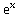
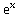
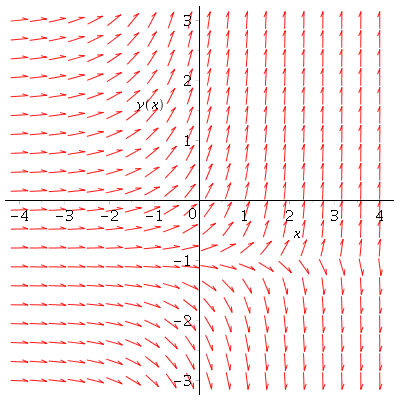
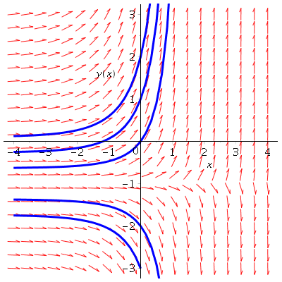
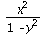
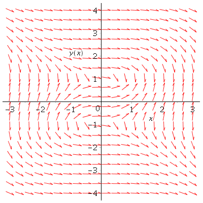
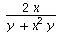
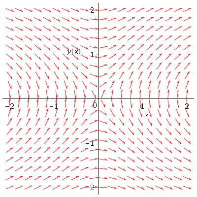

Direction Field
| > | with(DEtools): |
Direction field plot: y'(x) -  y = 
y = 
| > | dfieldplot( diff(y(x),x)-exp(x)*y(x)=exp(x), y(x), x=-4..4, y=-3..3 ); |
|  |
Direction field and a few solution trajectories.
| > | DEplot( diff(y(x),x)-exp(x)*y(x)=exp(x), y(x), x=-4..4, [[y(0)=1], [y(0)=-2], [y(0)=2], [y(0)=-3], [y(0)=0]], y=-3..3, linecolor=blue); |
|  |
Direction field plot: y'(x) = 
| > |
|  |
| > |
Direction field plot: y'(x) = 
| > | dfieldplot( diff(y(x),x)=2*x/(y(x)+x^2*y(x)), y(x), x=-2..2, y=-2..2 ); |
|  |
| > |
| > |